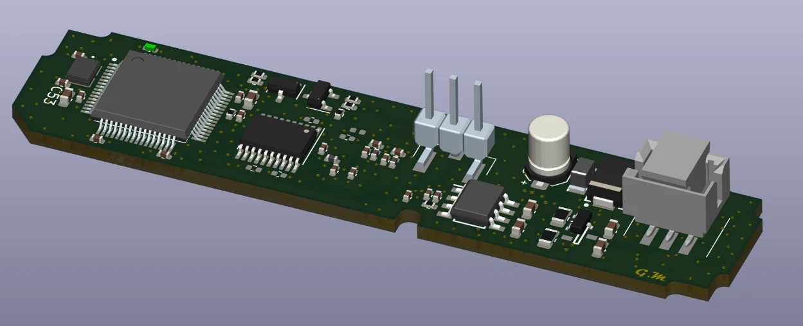

PROJEKT 02 / AUTOMOTIVE / INTERFEJS CZUJNIKA
Radar Board
Kompaktowa czterowarstwowa płytka PCB do komunikacji z mikrofalowym sensorem radarowym i sterowania nim.

01 / OPIS
Kompaktowy interfejs sensora
Płytka jest oparta na mikrokontrolerze STM32F334R8T6 i została zaprojektowana do obsługi mikrofalowego sensora radarowego w obudowie BGA ze zintegrowanymi antenami. Projekt obejmuje układy zasilania i komunikacji oraz uwzględnia wymagania branży motoryzacyjnej.
Najważniejsze elementy projektu
- Mikrokontroler STM32F334R8T6
- Mikrofalowy sensor radarowy w obudowie BGA ze zintegrowanymi antenami
- Przetwornica DC-DC i trzy stabilizatory LDO na płytce
- Translator poziomów napięć oraz transceiver CAN
- Czterowarstwowa konstrukcja PCB
02 / MODEL INTERAKTYWNY
Obejrzyj płytkę w 3D
Obracaj, przybliżaj i przesuwaj model, aby obejrzeć szczegóły projektu.
03 / GALERIA
Szczegóły projektu
Wybrane rendery 3D płytki PCB i zdjęcia rzeczywistego układu.



NASTĘPNY PROJEKTDrone Power Board
Wszystkie projekty ↗